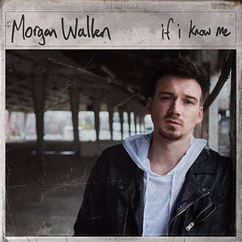
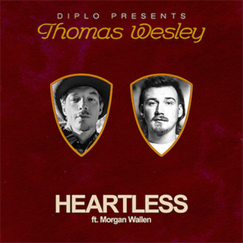

You Proof Video
Wasted on You is from the Dangerous: The Double Album Album and was released in 2021. It spent 57 weeks on the Billboard Hot 100, with its highest spot being #9 on January 23rd, 2021. The song is about a breakup and reflects on all of the wasted time and money that was put into the failed relationship and how his solution to getting over the ex is to “get wasted”. Morgan co-wrote the song and claimed that the inspiration for it “came from a pretty pissed off place” when thinking about all of the wasted resources that go into a relationship that doesn’t work out.
“All of this time and all of this money, All of these sorries I don’t owe you honey All of these miles on this Chevy, and prayers in a pew All them days I spent wasted on you Wasted on you”Sand in My Boots is from the Dangerous: The Double Album Album and was released in 2021. The song spent 41 weeks on the Billboard Hot 100, making it to spot #30 in March 2022. It is about meeting a girl on vacation and hoping that things could work out once vacation was over, but she doesn’t return home with him. It leaves Wallen wondering what could have been and reflecting on the time that they had spent together.
“Yeah, but now I’m dodging potholes in my sunburnt Silverado Like a heart-broke Desperado, headed right back to my roots Somethin’ bout the way she kissed me tells me she’d love Eastern Tennessee Yeah, but all I brought back with me was some sand in my boots”
You Proof is from the One Thing at a Time Album and was released in 2022. The song spent 38 weeks on the Billboard Hot 100, eventually making it up to spot #5 in October 2022. It is about trying to drink the memory of an ex away, but needed something stronger to do so since it is not working. The song has Wallen expressing how he can’t forget his ex no matter how hard he tries.
“I need something you proof Somethin stronger than I’m used to Yeah, I’ve been pourin’ ninety to a hundred Feel like nothing’s gonna cut it, that’s the hard truth Yeah, I need something you proof Oh, I need something you proof”
Chasin’ You is from the If I Know Me Album and was released in 2018. It spent 36 weeks on the Billboard Hot 100 and reached spot #16 in June 2020. Chasin’ You is about being forced to move on from your ex that you still care deeply about and consistently reminiscing on all of the old times that were spent together. Wallen expresses how the circumstances have changed and the couple is no longer together, but he still has the same feelings.
“Chasing that freedom, chasing that feeling that got gone too soon
Chasing that you and me, I only see in my rear view
Hell, I’m laying every night holding someone new
Still chasing you, still chasing you”

Chasin' You Video
More Than My Hometown is from the Dangerous: The Double Album Album. It spent 32 weeks on the Billboard Hot 100, making it up to spot #15 in November 2020 after being released in May 2020. Throughout the song, Morgan expresses his love for his girlfriend, but makes it very clear that he values where he is from so much that he is unable to leave it, even if it means losing the one who he loves the most. When asked in an interview, Morgan said that the song is meant to remind people not to change who you are and what you value for anyone, even when you are in a relationship with someone you love.
“ ‘Cause I love you more than a California sunset I love you more in a twenty-dollar sundress Hate that loaded down car you got your keys in Girl, but I hate even more that you’re leavin’ ‘Cause I love you more than the feeling when the bass hits the hook When the guy gets the girl at the end of the book But that ain’t you and me so I guess I’ll see you around ‘Cause I can’t love you more than my hometown”
Whiskey Glasses is from the If I know Me Album and was released in 2018. It spent 27 weeks on the Billboard Hot 100, peaking at spot #17 in June 2019. The song is simply a song about getting over a breakup by drinking the pain away. In an interview, Wallen said that he chose to sing about whiskey specifically, because he thinks that it’s good for heartache and the song represents that desperate feeling to forget somebody.
“I’ma need some whiskey glasses ‘Cause I don’t wanna see the truth She’s probably making out on the couch right now With someone new Yeah, I’ma need some whiskey glasses If I’m gonna make it through If I’ma be single I’ma need a double shot of the heartbreak proof And see the world through whiskey glasses”
Flower Shops is from the Flower Shops Album and was released in 2022. The song is by country music artist Ernest, featuring Morgan Wallen. Flower Shops spent 26 weeks on the Billboard Hot 100, with its highest position being #64 in April 2022. The song is about troubles in a relationship and uses flowers to symbolize the first step towards a resolution. This may be relatable for a lot of couples as flowers are usually used for apologies.
“So, buddy, I’ll take your roses If you cut off the thorns, she can’t take no more I’ll buy violets and daisies to hide all the crazy, it’s gonna take all you got It’s a tough day for love, but a good day for flower shops”
Thought You Should Know is from the One Thing at a Time Album and was released in 2022. It spent 25 weeks on the Billboard Hot 100, peaking at spot #12 in May 2022. The song is dedicated to Morgan’s mom, Lesli Wallen and the whole thing is about checking up on her to make sure she is doing alright and letting her know what is going on in his life since he has been away from home, busy on tour.
“I thought you should know That all those prayers you thought you wasted on me Must’ve finally made their way on through I thought you should know I got me a new girl down there in Jefferson City, and She lets me fish whenever I want to Yeah, I’m still proud of where I came from Still your only damn son Can you believe I’m on the radio? Just thought you should know, thought you should know, thought you should know”
7 Summers is from the Dangerous: The Double Album Album and was released in 2020. It spent 24 weeks on the Billboard Hot 100, making it all the way up to spot #6 in August 2020. Throughout the song, Wallen reminisces on a young love he experienced with a girl seven summers ago. He talks about things they did together and promises they made and then expresses how he wonders what she is up to these days and if she still thinks about him too.
“But I wonder when you’re drinkin’ If you find yourself thinkin’ About that boy from East Tennessee And I know we both knew better But we still said forever And that was seven summers of Coke And Southern Comfort Were we dumb or just younger, who knows? Back then you used to love the river And sippin’ on a sixer with me Does it ever make you said to know That was seven summers ago?”
Heartless is from the Diplo Presents Thomas Wesley, Chapter 1: Snake Oil Album, and it was released in 2019. The song is by DJ Diplo, featuring Morgan Wallen. With Heartless spent 21 weeks on the Billboard Hot 100, making it to spot #39 in June 2020. Morgan sings about how his feelings are being played with and the girl doesn’t even see what is wrong with it. With the sounds produced by Diplo and the voice of Wallen, this song became a hit to lovers across many genres.
“But why you gotta be so heartless? I know you think it’s harmless You’re tearing me apart and Girl the hardest part is You’re so high on attention Taking miles from inches Leave me in the darkness Never finish what we started Girl why you gotta be so heartless? So heartless, so heartless”
